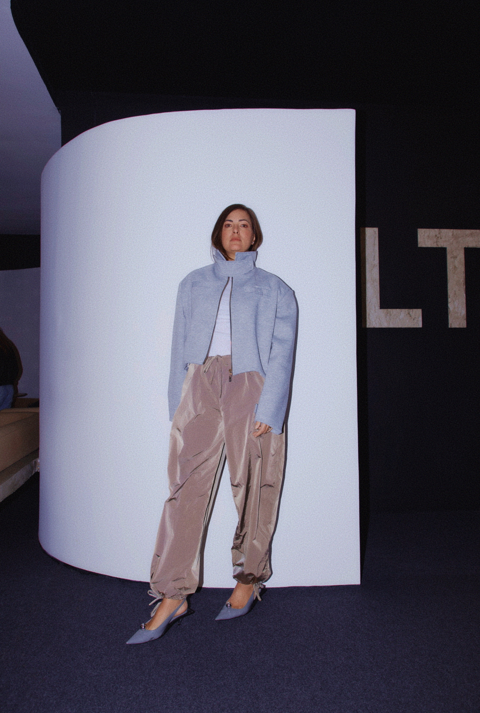

(04) A Dupla
Por trás
de tudo.
A força não está em fazer as duas parecerem iguais — está em transformar a diferença em ativo.

Visão — Posicionamento — Narrativa
Dani
Mello
Visibilidade não se improvisa. Se constrói. Dani pensa, nomeia e direciona — traduz intenção em estratégia.

Método — Entrega — Acompanhamento
Fabiola
Fuchs
Estratégia que não sai do papel não é estratégia. Fabiola ancora, sustenta e transforma decisão em resultado.